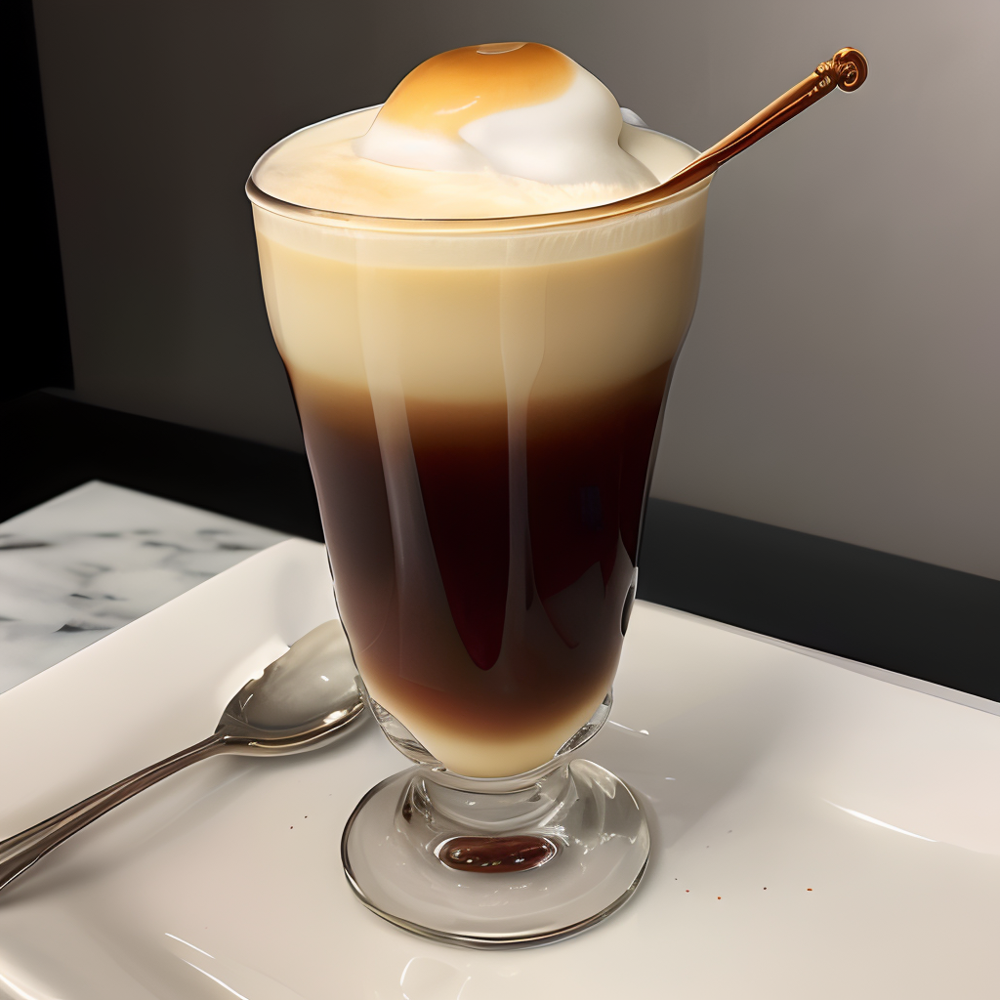

Una exquisita mezcla de granos de café de origen único, tostados a la perfección. Este
café especial te transportará a un mundo de sabores ricos y aromas irresistibles.

Una suave combinación de espresso italiano y leche vaporizada, coronada con una delicada espuma. El Latte
Loremito es la elección perfecta para los amantes del café con un toque de elegancia.

Una bebida fría y refrescante que combina el sabor intenso del café con el dulzor indulgente del caramelo. El
Caramelus Ipsum Frappé es la opción ideal para los días calurosos.

Una infusión relajante de té verde con toques de menta fresca y un toque de miel. El Té Ipsum Zen es la elección
perfecta para aquellos que buscan un momento de calma y serenidad.

Una obra maestra de café, leche y espuma, el Capuccino Creatus es una experiencia indulgente que combina la
intensidad del espresso con la suavidad de la leche.